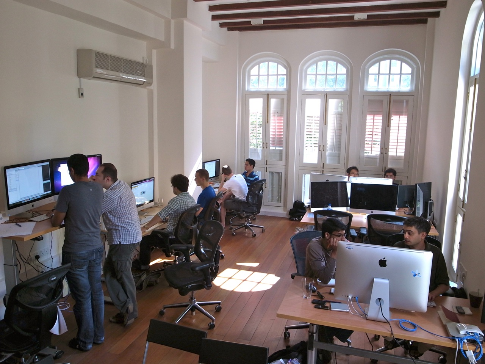
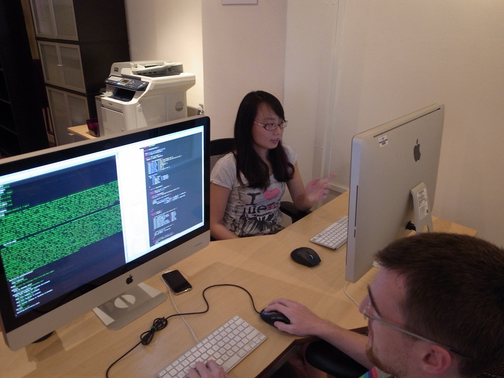
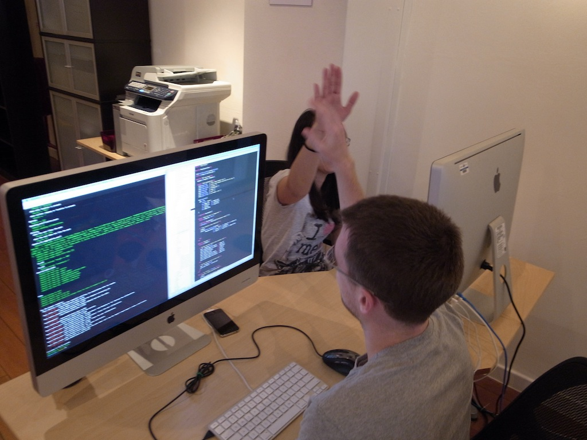
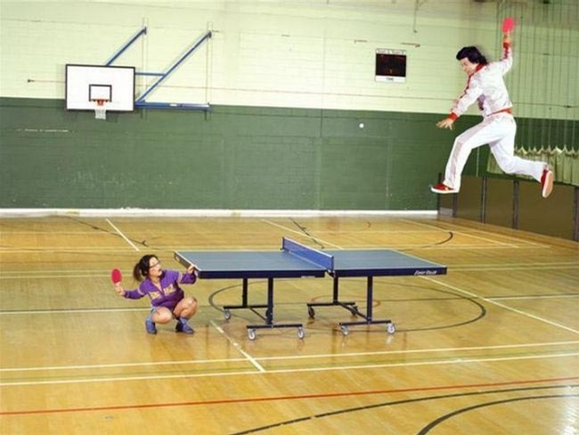
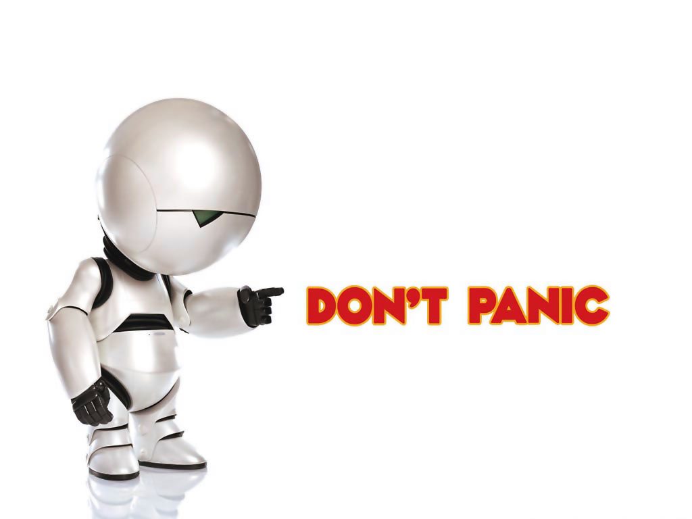

A Journey into Pair Programming
Wei
@luweidewei
Things I know to be true

Coding is fun!
Source: http://en.wikipedia.org/wiki/File:Uwaterloo_seal.gif
Sharing is a great way to learn!
Source: http://en.wikipedia.org/wiki/File:NationalUniversityofSingapore.svg
Freedom is nice!
Source: http://rocketfuel.com/resources
Engineers are precious!

Source: http://en.wikipedia.org/wiki/File:Stanford_University_seal.svg
http://www.flickr.com/photos/claudiaveja/2281610267/
Why not...
a career in software engineering?

Let's pair!
Source: www.pivotallabs.com

Source: Carl Coryell-Martin
tête-à-tête pairing station

Source: Carl Coryell-Martin

Source: Carl Coryell-Martin

Source: http://www.funny-games.biz/images/pictures/1770-kung-fu-table-tenis.jpg
Why pairing?
On the more complex system, the pair programmers had a 48 percent increase in the proportion of correct solutions, but no significant differences in the time taken to solve the tasks correctly. For the simpler system, there was a 20 percent decrease in time taken but no significant differences in correctness.
E. Arisholm, H. E. Gallis, T. Dybå, and D. I. K. Sjøberg (2007)
The results demonstrate that Pair Programming has actually a strong positive effect on satisfaction, work sustainability, and communication.
W. Pedrycza, B. Russob, and G. Succi (2010)
http://simula.no/research/se/publications/Arisholm.2006.2
http://www.sciencedirect.com/science/article/pii/S0164121210003407 (2010)
Is pairing for me?
-
Enjoy coding
-
Like sharing
-
But...
What about my freedom?
Would you trade your freedom for..?
-
An open and friendly environment
-
Productivity and excellence
-
Somebody to talk to ALL day
What about someone constantly looking over your shoulder?
Like a good relationship
-
Nervous
-
Excited
-
Think on your feet
-
Focused
-
Efficient
-
Analytical
-
Reflective
-
Better
Let's talk about Relationships
Chapter 1
Jedi Master

-
Observe & learn
-
Ask questions
-
Get a hold of the keyboard
-
Ask for keyboard nicely
-
Ask for keyboard
-
Demand for keyboard
Mutually Beneficial Relationship
Newbie: Massive knowledge transfer
Jedi master: Still more productive
Chapter 2
Your Doppelganger
source: http://images.wikia.com/familyguy/images/a/a2/FGQuagmiresBaby1.jpg
-
More balanced ping pong
-
More research to be done, separately
-
Take short breaks frequently
-
Good/bad pairing days
Collaborative Learning Relationship
Less frustration
Happier developers
Better sustainability
Chapter 3
Undercover
-
Be ready to be persuaded (if they are nice cops)
-
Be ready to sharpen your understanding
-
Stay positive & focus on the task
-
Let patterns emerge
Love-Hate Relationship
Much more principled
More patience
Better people skills
Bonus Chapter
Best Friend
Awesome
True Story
Two is better than one
Twenty years from now you will be more disappointed by the things that you didn't do than by the ones you did do.
Mark Twain
Pair exchange
See for yourself you shall